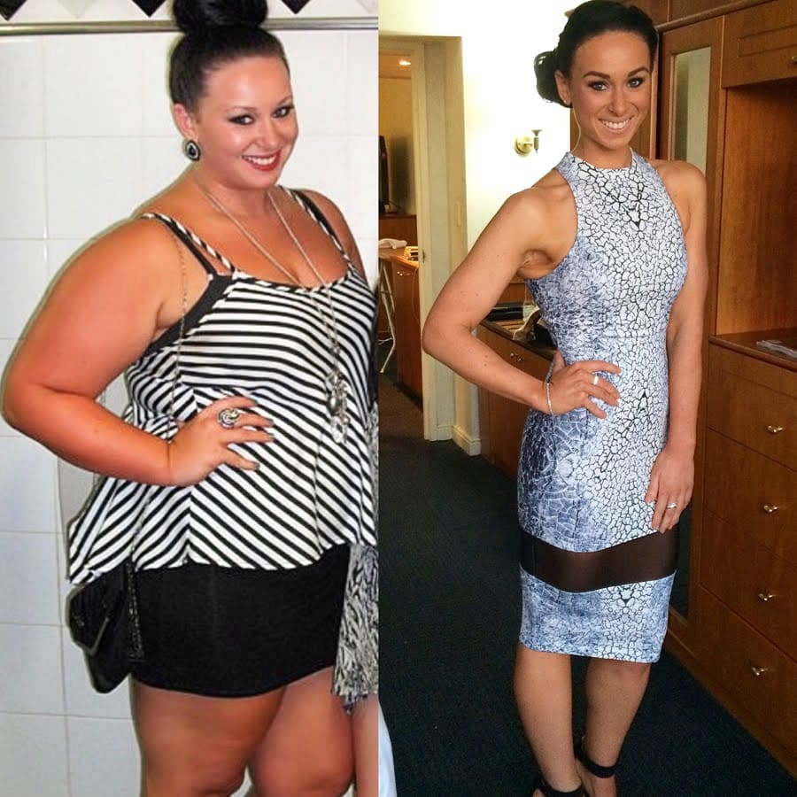
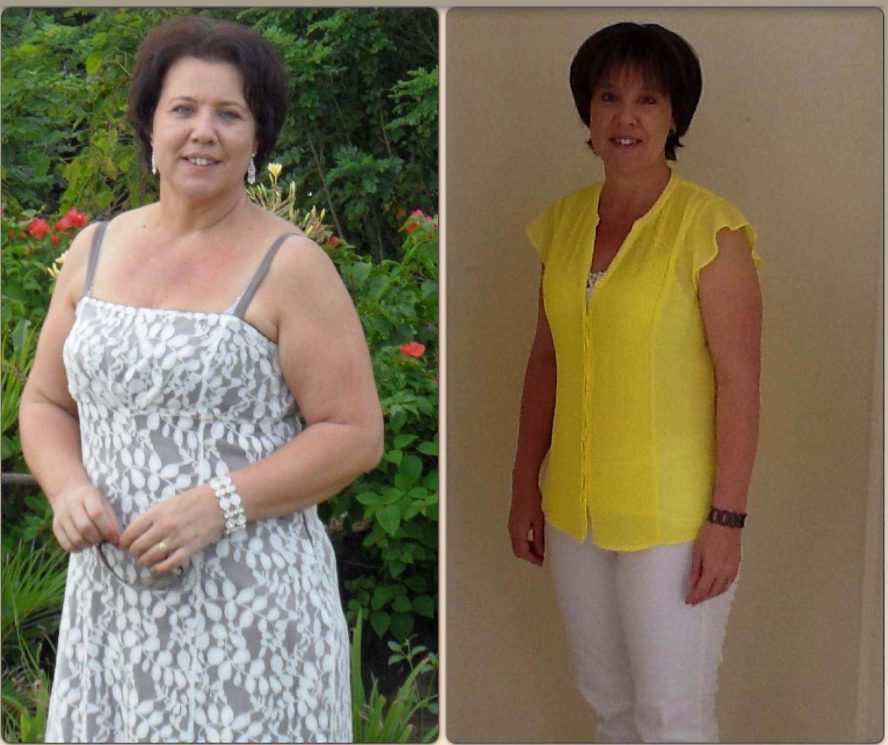
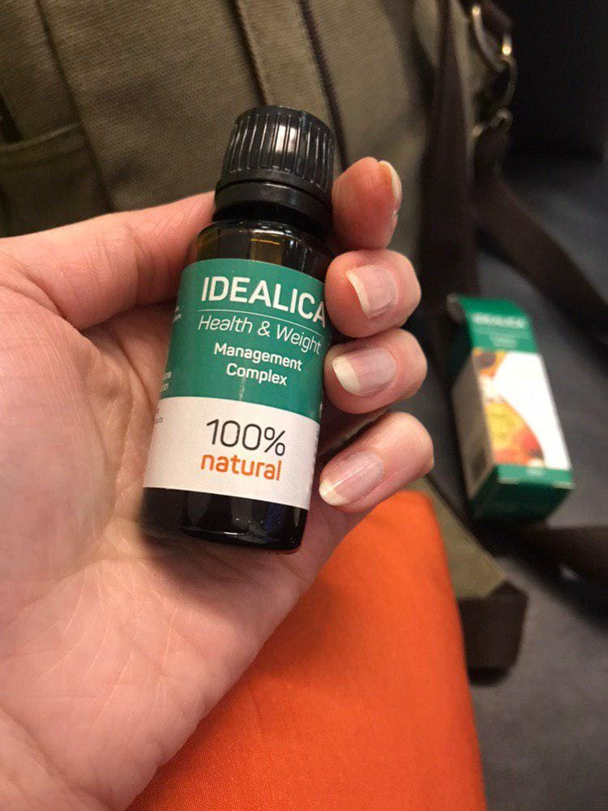

„Doctorul avea să mă încaseze cu 20.000 de euro pentru o operație de slăbit. Dar am slăbit fără să intru sub cuțit și mi-am economisit banii ”.
Doctorul Cameliei Gheciu a cerut 20 de mii de euro pentru o operație de slăbit (bariatrie) ... Potrivit acestuia, aceasta era singura șansă pentru femeie de a slăbi. Cu toate acestea, Camelia a găsit un alt mod ... Citește în acest articol cum Camelia a refuzat intervenţia chirurgicală, dar totuşi a pierdut în greutate, cheltuind mai puțin de 400 !
V-aţi imaginat vreodată cum ar fi viața dvs. dacă aţi avea un corp suplu ... și aţi putea purta hainele pe care chiar doriţi să le purtaţi ...
După ce a încercat totul pentru ca să slăbească, Camelia Gheciu din Bacău, aproape că s-a decis la o operație bariatrică în valoare de peste 20.000 de euro pentru a-și restabili corpul și sănătatea.
Însă, înainte de operație, Camelia a decis să se alăture grupului de testare a unui produs nou, unic de slăbit natural, numit . a câștigat popularitate imensă în America și acum câștigă şi în Europa, iar medicii au decis să organizeze un grup de oameni pentru testarea produsului nou, unde a şi ajuns Camelia.
După o utilizare de 60 de zile a produsului, Camelia a văzut rezultatele pierderii în greutate: minus 17 kg!
Camelia a continuat tratamentul și după 6 luni a pierdut incredibil 29 kg fără să se înfometeze sau să se omoare la sală. Și a întărit rezultatul. Greutatea nu a revenit!
„Destul de ciudat, dar nu am avut reacții adverse. Procesul de a pierde în greutate a fost natural și plăcut. Și toate acestea datorită compoziției naturale unice , pe baza de extracte de fructe exotice: rambutan, kivano și cherimoi. Aceasta este cu adevărat o inovație pe piața europeană. Și cel mai bun: costă mai puțin de 400 pe lună! Am cheltuit mult mai mult pentru abonamente la sală, cocktailuri și alimente cu conținut scăzut de calorii și, cu toate aceste cheltuieli, nu am pierdut în greutate!„
Dacă încă nu ați auzit despre picăturile , atunci știți, că veți auzi în curând.
După ce sibutramina (un drog periculos care îmbunătățește sațietatea) a fost interzisă de Ministerul Sănătății în 2011, populația Europei a început să crească în greutate. Dar acum, în 2019, guvernul nostru a luat măsuri pentru combaterea obezității și a aprobat un nou produs natural pentru pierderea în greutate, la fel de puternic ca sibutramina ...
Însă, , nu are efecte secundare periculoase, spre deosebire de analogi.
Picăturile au fost aprobate în toate țările din Asia, America și acum este rândul Europei!
Picăturile au fost livrate către farmacii la mijlocul anului 2019, însă, dacă ați încercat deja să le achiziționați, probabil că ați observat că nu sunt disponibile.
În prezent, singura modalitate de a obține produsul original este site-ul distribuitorului oficial, care poate fi găsit AICI. Astăzi vom vorbi despre cum Camelia a pierdut kilogramele în plus și despre dificultățile pe care le-a întâmpinat. Și dacă aveţi nevoie să slăbiţi, vă vom spune totul despre cum funcționează picăturile . Și, de asemenea, despre cum să obțineți o reducere incredibilă la acest nou produs, care tocmai a ajuns în Europa.
Cum funcționează picăturile ? Ce ajută la arderea depozitelor de grăsime?
- complex 100% natural, bazat pe 3 cele mai puternice extracte vegetale de astăzi pentru a restabili metabolismul și digestia adecvată: rambutan, kivano și cherimoya.
Ingredientul cheie în este fitoirisina. Acesta este un ingredient brevetat pe care oamenii de știință l-au crescut din planta rambutan. Fitoirisina are cel mai puternic efect lipofil, adică, nu permite absorbția grăsimilor în organism, motiv pentru care este adesea consumată cu alimente calorice cu conținut ridicat de grăsimi.
Fructele rambutanului sunt bogate în antioxidanți care protejează celulele umane de deteriorarea oxidativă. Moleculele de fitoirisină se atașează de moleculele de toxine și se elimină din corp cu ele. După îndepărtarea tuturor toxinelor și curățarea organismului, moleculele fitoirisinei încep să se atașeze de moleculele de grăsimi albe dăunătoare. Din cauza grăsimii albe apare burtica noastră și figura creşte. Fitoirisina elimină complet acest tip de grăsime care desfigurează corpul uman. Important este că fitoirisina nu atinge așa-numita grăsime brună, din cauza căreia pielea noastră rămâne tânără și elastică. Picăturile cu fitoirisină învață organismul să nu acumuleze grăsimi albe în corp, acest lucru ajută la consolidarea rezultatelor pierderii în greutate.
Al doilea ingredient din este extractul de kiwano, care ajută la descompunerea proteinelor și grăsimilor și la extragerea celor mai sănătoase elemente din alimente.
Moleculele Kivano reconstruiesc și reînnoiesc sistemul digestiv și metabolismul, care începe să funcționeze în același mod ca în tinerețe, când tot ce era sănătos a fost rapid absorbit din alimente, iar toxinele și grăsimile dăunătoare au fost eliminate imediat din organism, fără a fi depozitate.
Al treilea ingredient - extract de fructe de cherimoya din conține o cantitate record de substanțe care îmbunătățesc starea de spirit și prelungesc tinerețea. În plus, cherimoya este capabilă să scadă colesterolul, să curețe complet corpul de toxine și impurităţi și să pregătească organismul pentru reducerea rapidă a excesului de greutate.
Întreaga compoziție naturală a picăturilor este concepută pentru a te face să slăbești. Acesta este un întreg complex de microprocese diferite care vor apărea în corpul tău după începerea administrării picăturilor. Dar cel mai important proces este detoxifierea corpului - moleculele fitoirisinei, sunt atașate de moleculele de grăsimi și odată cu ele sunt eliminate din organism.
Rezultatul? Grăsimea este atrasă de fitoirisină și se lipesc între ele.
Acest ligament formează un gel care îți umple stomacul și te lasă sătul.
După 4-6 ore, acest gel uleios este pur și simplu eliminat din organism în mod natural prin scaun.
Astfel, pe lângă faptul că simțiți mai puțină foame și mâncați mult mai puțin, scăpați treptat de toată grăsimea care vă deranjează și vă împiedică să pierdeți în greutate.
Acest mod unic și simplu care face ca fitoirisina să absoarbă grăsimea din corpul tău, funcționează ca o adevărată „liposucție naturală”.
Anume „ liposucția naturală ” care este declanşată de picăturile , a atras în cele din urmă atenția Cameliei și au obligat-o să renunţe la operație pentru totdeauna.
„De ce fac o operație dacă pot obține același efect folosind ? Nu știu cum alţii, dar între tăierea abdomenului în jumătate și eliminarea naturală a grăsimii, voi alege să stau departe de cuțit! ”
Și câtă grăsime pe lună poți pierde cu ?
Potrivit experților, pierderea în greutate depinde doar de indicatorii individuali ai fiecărei persoane. Dar există un număr minim pe care îl puteți pierde.
Această valoare este de 1,2 kg de grăsime pe săptămână, ceea ce înseamnă minus 4,8 kg pe lună minim!
Desigur, unii oameni pot pierde mult mai mult folosind picăturile , dar va depinde de mai mulți factori ...
Un astfel de factor este cantitatea de grăsime din corp. Cu cât trebuie să pierdeți mai multă grăsime, cu atât trebuie să luați mai mult fitoirisina pentru a se forma gelul. Cu cât ai mai multă grăsime, cu atât poți pierde mai mult!
De exemplu, o cantitate mare de grăsime din organism a fost unul dintre motivele pentru care picăturile au funcționat atât de bine la Camelia Gheciu, mai ales în primele luni de la administrare.
Dar dacă abordați scăderea în greutate într-un mod complex și vă implicați într-o activitate, antrenament sau mers pe jos. Dacă începeți să aveţi o dietă echilibrată și să refuzați băuturile zaharoase carbogazoase, atunci efectul va fi mult mai puternic! Nu va fi de 4,8 kg pe lună, ci mult mai mult!
De exemplu, Camelia, în timp ce lua , s-a limitat la băuturile zaharoase consumate, iar efectul a fost incredibil! Iar în weekend, și-a permis să mănânce la fel ca înainte de a slăbi.
Acest lucru înseamnă că, atunci când luați picături , nu trebuie să mergeți pe diete extreme, exerciții fizice sau alte „sacrificii”. De fapt, orice modificări minime sunt suficiente pentru a vă îmbunătăți rezultatele!
Vedeți ce spune medicul american Carol M. Shields despre Formula picăturilor :
" face acelaşi lucru ca şi liposucția, știați? În loc să ardeți grăsimile transpirând ca un condamnat la sală, pur și simplu transformă grăsimea într-un gel, iar acest gel se elimină în mod natural din organism. Pentru cei care urăsc să facă sport și să facă exerciții fizice este un mare avantaj pentru că nu trebuie să facă nimic pentru a arde grăsime. De exemplu, dacă îți reduci consumul de pizza și băuturi zaharoase, acest lucru va funcționa ca bonus și vei pierde și mai mult în greutate!"
Această formulă , împreună cu simplul obicei de a nu bea prea multe băuturi zaharoase, au salvat-o pe Camelia de nevoia unei intervenții chirurgicale bariatrice. Și în doar 6 luni de utilizare a , rezultatele Cameliei au fost incredibile!
Uită-te la rezultatele Cameliei! La fel puteți obține acest lucru folosind :
Într-un interviu exclusiv pentru revista Elle, Camelia Gheciu a povestit că în 6 luni cu a pierdut 29 kg!
Editorial: Camelia, de curând ai devenit foarte faimosă pentru că ai abandonat bariatria și ai folosit un produs magic pentru a slăbi. Ne puteți spune povestea dvs. mai detaliat?
Camelia Gheciu: Desigur! Am fost supraponderală încă din copilărie. Cred că este genetic, deoarece toată familia noastră este destul de plinuţă. Știi, după prima mea sarcină la 27 de ani, am început să adaug prea mult. Anul trecut, medicii m-au diagnosticat cu „obezitate acută” pentru că aveam 1,69 înălțime și cântăream deja 106 kg.
Editorial: Ați încercat diete?
Camelia Gheciu: Da, de o mie de ori! Am încercat totul, de la cele mai cunoscute diete, de exemplu, metoda Ducan, până la cele populare pe internet - proteine și chiar bomboane. Chiar dacă am pierdut puțin,după - greutatea a revenit în volume și mai mari și m-am simțit și mai rău decât înainte de dietă. Am simțit că respectul meu faţă de sine se lasă până la fund.
Editorial: ce te-a făcut să refuzi o operație bariatrică?
Camelia Gheciu: La început mi s-a părut decizia evidentă, dar nu am fost niciodată 100% sigură că asta vreau. Când m-am gândit că o să merg sub cuțit, am fost mereu surprinsă ... O să plătesc 20 de mii? Și pielea întinsă care va rămâne cu mine ... Voi avea o altă operație pentru a îndepărta excesul de piele? Ce se întâmplă dacă nu suport atât de multe operații, pentru că este periculos! Iar complicațiile după anestezie sunt cea mai grea teamă a mea. Dacă inima mea nu va rezista? Toate acestea m-au deranjat prea mult. La final, mi-am dat seama că chirurgia bariatrică este prea riscantă pentru mine. Din fericire, în timp și m-am salvat de decizia ireparabilă.
Editorial: Ne puteți spune cum ați aflat despre ?
Camelia Gheciu: În urmă cu puțin mai bine de 6 luni am avut o zi când am venit acasă după muncă și am avut o mare ceartă cu soțul meu. Am vorbit foarte mult despre faptul că își pierdea interesul pentru mine și bănuiam că era din cauza greutății mele.
După această conversație, m-am enervat foarte mult și, pentru a mă calma un pic, am început să citesc pagina mea pe Instagram.
Și atunci am văzut instagramul unui medic american care a vorbit despre formula unică de slăbire și a recrutat un grup de oameni care doreau să testeze un produs nou.
M-am dus pe site-ul oficial, am urmărit toate videoclipurile explicând cum funcționează și apoi am făcut o comandă. M-am gândit, de ce nu? Am suferit atât de mult, am vrut să am încredere în profesioniști. Am făcut o comandă la domiciliu și după 4 zile am primit un pachet cu .
Editorial: și cum v-aţi simțit să luați acest produs?
Camelia Gheciu: Foarte bine, așteptam cu nerăbdare să încep administrarea! Am vrut deja să simt liposucția naturală pe care le-a promis ! Recunosc, am crezut că mă va face toată ziua să stau în toaletă (râde), dar din fericire nu a fost așa. În total 25 de picături, de 2 ori pe zi și procesul a mers.
În primele zile, am simțit că corpul meu a început să lucreze! Am simțit energie și dorinţă de viaţă. Am avut sentimentul că elimină toxinele din organism. Rezultatul primii săptămâni a fost 3 kg. Prima lună aşteptam să pierd 4,8 kg, dar am pierdut 11!
Constant pierdeam în greutate şi după 6 luni de administrare , greutatea am fost mai mică cu 29 kg!
Editorial: Veți continua administrarea?
Camelia Gheciu: Am încetat să iau , pentru că mi-am atins scopul și mă simt super-slabă și frumoasă! Asta este important pentru mine.
Editorial: Aţi putea să împărtășiți cu cititorii noștri cu fotografia dvs. înainte de și după aceea? Poate că va inspira și motiva!
Camelia Gheciu: Desigur! Fotografia până la cântăream 106 kg. Uită-te la această fotografie, îmi amintesc cât de oribil mă simțeam. Atunci încă încercam să merg la sala de sport și cum vedeți, nu a funcţionat (râde). Acum mă simt perfect!
O femeie a dat jos mai mult de 29 kg, achitând mai puțin de 400
În interviu, am întrebat-o totuşi pe Camelia, cât a cheltuit pe , iar răspunsul a șocat: `Am dat jos mai mult de 29 kg, cheltuind mai puțin de 400 pe lună!`
Această sumă este mizeră în comparaţie cu cele 20 000 de euro, pe care Camelia dorea să le plătească pentru bariatrie. În același timp, administrarea picăturilor a garantat Cameliei aceleași rezultate ca și operația - cu diferenţa că a slăbit pe cale naturală și chiar a salvat banii.
Acum, Camelia ne povesteşte, pentru ce trebuia să plătească înainte de decizia de a cumpăra :
Înainte, în fiecare lună, cheltuiam sume ENORME pentru încercările inutile de pierdere în greutate. De exemplu, la sala de sport în apropierea casei, care costă aproape 130 de euro pe lună. Diferite produse cosmetice: geluri, măşti etc., fiecare dintre aceștia a fost în valoare de 200 , și mai mult, aditivi alimentari, legume organice și fructe ... au costat o avere întreagă, dar cel mai supărător era că au fost cheltuieli inutile. Pentru că nu mă ajuta nimic
Camelia recunoaște că nici măcar nu poate să evalueze cât de mult a cheltuit în viață, încercând să piardă în greutate, dar este cu siguranță mai mult de 400 pe lună.
Reflectând asupra comparativului științific al valorii și a altor metode de pierdere a greutății, am cerut doctorului în ştiinţă Constantin Imre, să-și exprime opinia referitor la oreraţii, dietă, sălile de sport și moleculele de care ard grăsimile:
Nu recomand să recurgă la operație nici unui dintre pacienţii mei, nu înainte de a încerca alte metode de pierdere în greutate. Probabilitatea celor mai neplăcute consecințe, după operație, sunt foarte mari. Ceva nu poate merge şi atunci valoarea intervenţiei va fi mult mai mare de 20.000 de euro, iar perioada postoperatorie poate dura luni și tot timpul veți avea nevoie de o supraveghere a unui doctor sau de o infermieră. Aici vorbim despre suma de 40.000 de euro și poate chiar mai mult.
Doctorul Constantin Imre avertizează, de asemenea, despre recepția drogurilor și aditivilor interzişi în Europa, care se presupune că vor contribui la pierderea în greutate, dar în același timp otrăvesc organismul uman cu substanțe chimice.
De asemenea, potrivit medicului, toată lumea care dorește să piardă în greutate ar trebui să treacă mai întâi la alimente dietetice și să înceapă exerciții fizice moderate.
Cu toate acestea, după cum spune medicul, există excepții:
Din păcate, dieta și sala nu întotdeauna contribuie la slăbit. Și în astfel de cazuri atunci când aţi încercat totul, dar nu puteți scăpa de greutatea în exces, vă recomandăm să utilizați picăturile naturale . În ele, sunt sigur 100%. În compoziția lor naturală și beneficiul pentru organism, fără efecte secundare.
Doctorul explică faptul că, depășește toţi analogii și în special preparatele interzise, că compoziția este 100% naturală și componentele ei nu vă afectează hormonii, greutatea scade datorită normalizării metabolismului, controlul apetitului și arderea grăsimilor dăunătoare.
este disponibil în 44 de țări și a ajutat mai mult de 2 milioane de bărbați și femei din întreaga lume.
a început să se răspândească destul de recent în Europa, dar cererea acum depășește oferta. Există o listă de așteptări cu peste 13.300 de femei care doresc să comande un nou lot de produs ... noua partidă este deja în procesul de producție și se pare că lista de așteptări va crește și în câteva luni de a găsi în vânzarea liberă va fi dificil.
Producătorii vor oferi o reducere de 50% pentru cititorii noştri
Din fericire, producătorii au aflat despre articolul nostru și, ca mulțumire pentru informațiile despre produsele lor, au decis să le ofere cititorilor noștri o reducere de 50%. Nu ratați această șansă, comandați picăturile de și vă vor fi livrate acasă de la 2 până la 5 zile!
Nu lăsați pierderea în greutate pentru mâine! Începeți să luați acum și puteți purta un bikini pe plajă foarte curând. Faceți un pas către pierderea în greutate sănătoasă și spuneți `nu` greutății! Nu trebuie să vă limitați dieta, mâncați ceea ce doriți, nu vă chinuiți cu diete crude și activități gimnastice, ai încredere în compoziția și știința unică și pierde în greutate la fel cum au pierdut în greutate milioane de femei și bărbați din întreaga lume.
Urmați linkul exclusiv de mai jos și alegeți pachetul perfect.
Dar ţineţi minte: această reducere este valabilă doar pentru o săptămână ... până la urmă, este nedrept pentru 13.300 de femei care așteaptă la coadă la și vor fi obligate să cumpere produsul fără reducere.
Mi-a plăcut foarte mult articolul! Este foarte informativ și interesant. Acum sunt sigură că nu voi face o operație, dar o să încerc . .
Răspunde . 95 . Like . 13 minute în urmăAdministrez deja o lună şi deja simt că burta mea a scăzut! Nu m-am cântărit încă, dar vizual am slăbit considerabil!
Răspunde . 421 . Like . 14 minute în urmăNu am card de credit, pot plăti cu VISA?
Răspunde . 54 . Like . 16 minute în urmă
Pentru orice întrebare apelaţi la call-centrul nostru! Vă vom ajuta!
Femeie incredibilă! Aproape 30kg timp de șase luni este un rezultat foarte bun! Am comandat picăturile ieri la reducere și acum aștept când voi putea începe administrarea și să pierd în greutate!
Răspunde . 130 . Like . 18 minute în urmă
Am 46 de ani și sunt un fund leneș. Slăbitul pentru mine a fost un vis spre care tind toată viața mea. După luarea picăturilor, am început să pierd în greutate. Și găinuşa de la KFC și dulciurile au rămas în dieta mea. Nu am schimbat nimic. Este un miracol!
Răspunde . 130 . Like . 20 minute în urmăIată povestea mea de pierdere a greutății: de la 6 ani eram destul de mare, dar nu ma deranjat niciodată. Mâncam foarte mult. Toate rudele spuneau că am nevoie să mănânc mai puțin și să fac sport. În clasa a 6-a am început să fac carate, dar greutatea nu a plecat. După clasa a IX-a, m-am mutat în Sibiu, am făcut un colegiul. Am început să mă gândesc la viitor. Am început să mă gândesc la viitor. Da, și nu a vrut să intru în viața de student, şi să fiu mai slab decât cineva. Greutatea în exces nu m-a deranjat mult, dar mi-a fost foarte dificil să aleg haine. Desigur, corpul meu mă incomoda puţin, dar puteam să fac faţă glumelor. Şi singur puteam face glume pe seama mea. Am hotărât să mă iau în mâini după sărbători, după ce m-am cântărit şi am văzut cifra incredibilă. Am început să mă alimentez sănătos, să beau picăturile şi să mănânc de 6 ori pe zi. Anterior, am studiat cum funcționează în general procesul de reducere a grăsimii subcutanate în corp și, pe parcurs, procesul de câștigare a masei musculare (pentru viitor). Odată cu debutul primăverii, am început să mearg mult dimineața, iar mai târziu seara. A început să îmi placă că pot să mă creez așa cum vreau. Și am simțit o uşurare, care nu fusese niciodată înainte. Atitudinea mea față de mine s-a schimbat și am simțit că şi atitudinea celorlalți se schimbă în bine. Rezultatul: -25 kg
Răspunde . 613 . Like . 23minute în urmăAm cumpărat picăturile foarte recent și, până când îmi place totul. Mă simt normal, apetitul a scăzut, sunt forțe pentru a face ceva după muncă. Acum vin acasă și nu numai vreau să mănânc și imediat să adorm, dar pot ieşi la plimbare cu un prieten, merg la cinema. În general, am început să trăiesc o viață normală. Nu mă cântăresc, dar simt că am slăbit.
Răspunde . 64 . Like . 25minute în urmăMama a băut aceste picături și acum am un tată nou! Dau vina pe )))

Răspunde . 164 . Like . 25minute în urmăChiar am slabit! Mulțumim Internetului pentru că am aflat despre aceste picături. Burta a plecat în doar o săptămână. Am început să mă simt ușor și atletic =)
Răspunde . 89 . Like . 46 minute în urmă
Am mari probleme de sănătate din cauza greutății. M-am consultat cu medicul în privința acestor picături și săptămâna viitoare încep să le administrez. Urați-mi succes!
Răspunde . 37 . Like . o oră în urmăBeau picăturile deja de 2 săptămâni și am -8kg. Pare că funcționează.
Răspunde . 39 . Like . o oră în urmăIstorie de viață. Am cumpărat picăturile. Este interesant să văd rezultatul slăbirii, dacă încă mai fac sport la sală și voi mânca echilibrat. Cred că, dacă abordez în complex și mai fac și eu ceva, atunci rezultatul va fi în orice caz. Și picăturile le-am cumpărat ca un produs bun natural, în care sunt într-adevăr multe vitamine. În farmacii există analogi, dar sunt teribili de scumpi. Deci, mai bine acestea. Nu vă faceți rău la sigur.
Răspunde . 26 . Like . o oră în urmăSoția mea mi-a cumpărat picăturile cu ideea că este timpul să mă ocup de mine. Cred că trebuie să facem ceva cu adevărat. Articolul m-a inspirat, mulțumesc.
Răspunde . 201 . Like . 2 ore în urmăAm slăbit 5 kg într-o săptămână și jumătate. Nu m-am așteptat la acest rezultat! Și forțe au devenit mai multe! Vreau să am grijă de mine, să încep ceva să fac și nu doar să stau pe canapea după muncă. Mișto! Mă simt mai bine.

Răspunde . 2 . Like . 2 ore în urmăAceste picături m-au salvat! Medicii spuneau că trebuie să slăbesc urgent sau voi avea probleme de inimă. A trebuit să fac ceva și urgent. Singura soluție corectă a fost să cumpăr picăturile . Slăbesc încet, dar sigur și chiar cred că este mai bine așa pentru sănătatea mea.

Răspunde . 0 . Like . 2 ore în urmăAstăzi am comandat picăturile, mulțumesc celor de la call-centru, mi-au explicat totul!
Răspunde . 6 . Like . 2 ore în urmă